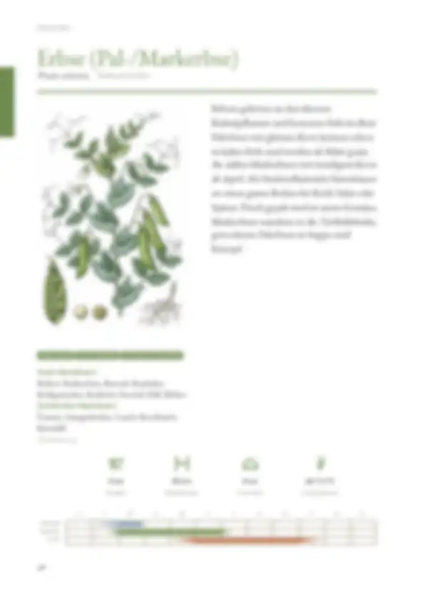
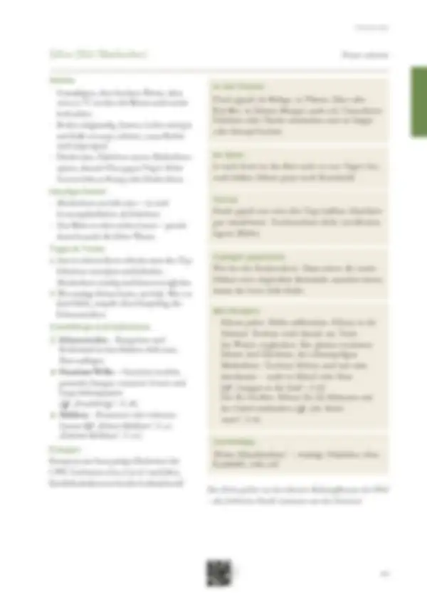

Tippe eine Quelle an, um zu sehen, wo sie verwendet wird – oder tippe auf einen Bereich der Seite.
15 Quellen dieser Doppelseite
Original · abgerufen am 28.10.2026 · ◐ ErfahrungVerwendet in: Zusammenfassung (Seite allgemein), Piktogramm-Leiste, Monatsleiste, Anbau, In der Küche, Anbau, Punkt 1, Anbau, Punkt 2, Im Beet, Anbau, Punkt 3, Häufige Fehler, Häufige Fehler, Punkt 1, Tipps & Tricks, Tipps & Tricks, Punkt 1, Mit Kindern, Schädlinge & Krankheiten, Schädlinge & Krankheiten, Punkt 2, Schädlinge & Krankheiten, Punkt 3, Düngen, Düngen, Punkt 1, Geschichte
Original · abgerufen am 26.10.2026 · ● belegtVerwendet in: Zusammenfassung (Seite allgemein), Düngen, Düngen, Punkt 1, Geschichte
Original · abgerufen am 26.10.2026 · ◐ ErfahrungVerwendet in: Zusammenfassung (Seite allgemein), Piktogramm-Leiste, Anbau, Anbau, Punkt 1, Tipps & Tricks, Saatgut gewinnen, Tipps & Tricks, Punkt 1, Mit Kindern, Geschichte
Original · abgerufen am 26.10.2026 · ◐ ErfahrungVerwendet in: Zusammenfassung (Seite allgemein), Vorrat, Geschichte
Original · abgerufen am 26.10.2026 · ● belegtVerwendet in: Zusammenfassung (Seite allgemein), In der Küche, Mit Kindern, Geschichte
Original · abgerufen am 26.10.2026 · ◐ ErfahrungVerwendet in: Zusammenfassung (Seite allgemein), Tipps & Tricks, Tipps & Tricks, Punkt 2, Schädlinge & Krankheiten, Schädlinge & Krankheiten, Punkt 1, Geschichte
Original · abgerufen am 26.10.2026 · ◐ ErfahrungVerwendet in: Zusammenfassung (Seite allgemein), Schädlinge & Krankheiten, Schädlinge & Krankheiten, Punkt 2, Geschichte
Original · abgerufen am 26.10.2026 · ◐ ErfahrungVerwendet in: Zusammenfassung (Seite allgemein), Piktogramm-Leiste, In der Küche, Häufige Fehler, Vorrat, Häufige Fehler, Punkt 2, Geschichte
Original · abgerufen am 26.10.2026 · ◐ ErfahrungVerwendet in: Zusammenfassung (Seite allgemein), Monatsleiste, Sortentipp, Geschichte
Original · abgerufen am 26.10.2026 · ◐ ErfahrungVerwendet in: Zusammenfassung (Seite allgemein), Piktogramm-Leiste, Monatsleiste, Vorrat, Geschichte
Original · abgerufen am 26.10.2026 · ◐ ErfahrungVerwendet in: Zusammenfassung (Seite allgemein), Piktogramm-Leiste, Geschichte
Original · abgerufen am 28.10.2026 · ◐ ErfahrungVerwendet in: Zusammenfassung (Seite allgemein), Sortentipp, Geschichte
Original · abgerufen am 26.10.2026 · ◐ ErfahrungVerwendet in: Nachbarn
Original · abgerufen am 26.10.2026 · ○ ÜberlieferungVerwendet in: Nachbarn
Original · abgerufen am 28.10.2026 · ◐ ErfahrungVerwendet in: Piktogramm-Leiste
● belegt (Versuch, Fachinstitut) · ◐ Erfahrung (Beratung, Praxis) · ○ Überlieferung. Abschnitte ohne eigene Quellenangabe in den Daten zeigen die Quellen der ganzen Seite („Seite allgemein“).